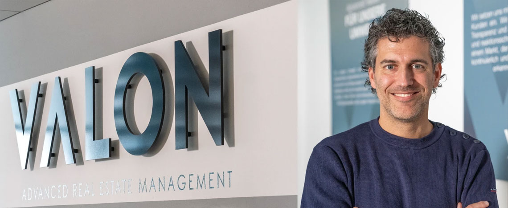

Gemeinsam können wir etwas bewegen! Komm als
Technischer Property Manager (m/w/d)

Valon bietet institutionellen und privaten Investoren eine ganzheitliche Full-Service-Lösung für fortschrittliches Immobilienmanagement von Wohn- und Gewerbeimmobilien. Das Leistungsspektrum reicht von kaufmännischem und technischem Property Management über Bau-Projektmanagement und ESG-Beratung. Mit hochspezialisierten digitalen Lösungen, die nahtlos in Kundenprozesse integriert werden, vereinfacht Valon Abläufe und reduziert Schnittstellen erheblich.
Valon ist Teil der Prokuras Gruppe mit über 600 Mitarbeitern und 70.000 Einheiten an 18 Standorten deutschlandweit.
Weitere Informationen erhalten Sie unter www.valon-group.com
Weitere Vorteile für Dich:
Das sind Deine Aufgaben:
Das bringst Du mit:
Haben wir Dein Interesse geweckt?
Dann schicke uns Deine aussagekräftigen Bewerbungsunterlagen mit Gehaltsvorstellung und nächstmöglichem Eintrittsdatum per E-Mail an: karriere@valon-group.com
Wir freuen uns auf Dich!
KONTAKT
Valon Property Management GmbH
Brüggering 7b
59494 Soest